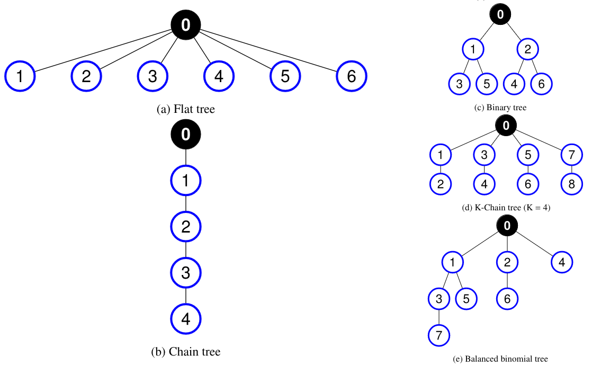
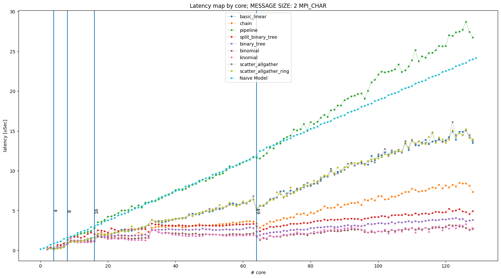

This is the exercise for Prof. Cozzini section of the 2023/2024 HPC course. It consists of several possible exercises: please read carefully and decide which one to take.
This document was cleaned up and completed with additional information by Niccolo Tosato and Marco Celoria.
Prof. Cozzini aknoledge their kind contribution.
Version 1.0: this document can be modified several times in the next few days in order to improve the clearness of the information to provide a better understanding of what we are asking.
YOURSURNAME_report.pdfdeadlines
You should send us the e-mail at least one week before the exam.
For the first two scheduled "appelli" this means:
The report should clearly explain which software stack we should use to compile the codes and run all the programs you used in your exercises. Providing well-done Makefiles/scripts to automatize the work is highly appreciated.
The openMPI library implements several algorithms to perform collective operations according to many different parameters. The exercise consists of an evaluation of some of them for two different collective operations:
gather, scatter, barrier, reduce.You are supposed to estimate the latency of default openMPI implementation, varying the number of processes and the size of the messages exchanged and then compare this latter with the values you obtain using different algorithms.
The exercise does not require any programming effort: students are supposed to use a well-known MPI benchmark: the OSU one and they are supposed to run them on at least two nodes of the ORFEO cluster, choosing among epyc, thin and fat, using all the available cores on a single node.
Download and compile the OSU benchmark available ON this page: https://mvapich.cse.ohio-state.edu/benchmarks/ .More detailed instruction about compilation can be found here .
Select 2 whole computational nodes, i.e. two [epyc|thin|fat] nodes
Select an additional blocking MPI collective operation you want to test among one of the four listed above. The collective benchmarks binaries files are placed under osu-micro-benchmarks-7.3/c/mpi/collective/blocking directory.
Familiarize with the osu_bcast and the additional collective operation you choose: run several repetitions of the programs and collect performance numbers, estimating the error in order to have a baseline for the two operations. Look at mpirun osu_bcast --help to have all options printed out, consider to increment warmup iterations(-x) and total iterations (-i).
Select for the two collective operation (bcast, mandatory for all, and the one you selected) at most three possible algorithms and perform the same set of measurements of the previous step.
Collect and compare numbers among the baseline and the algorithms you choose.
Try to understand/infer the performance model behind the algorithms you selected, taking into consideration the architecture on which they are being executed.
Report your result in a nice report and prepare a short presentation (no more than 10 slides)
Feel free to experiment with different messages size and task mapping with --map-by option of mpirun.
Open MPI architecture is based on software components, plugged into the library kernel. A component provides functionality with specific implementation features. For instance, a collective component known as Tuned implements different algorithms for each collective operation defined in MPI as a sequence of point-to-point transmissions between the involved processes.
By means of the ompi_info we can see the detailed information about the openMPI implementation and parameter that one can choose in order to select different algorithms. In the following we report the parameter you neeed to choose to select different algorithms for the following collective operations:
barrierbroadcastreducegatherscatterIn particular, to retrive all parameters for collective calls use : ompi_info --param coll all --level 9.
To enable this choice the following parameter must be specify:
MCA coll tuned: parameter "coll_tuned_use_dynamic_rules" (current
value: "false", data source: default, level: 6
tuner/all, type: bool)
Switch used to decide if we use static (compiled/if
statements) or dynamic (built at runtime) decision
function rules
Valid values: 0: f|false|disabled|no|n, 1:
t|true|enabled|yes|y
The parameters for the five operation we focus on are the following.
barrier algorithms:
MCA coll tuned: parameter "coll_tuned_barrier_algorithm" (current
value: "ignore", data source: default, level: 5
tuner/detail, type: int)
Which barrier algorithm is used. Can be locked down
to choice of: 0 ignore, 1 linear, 2 double ring, 3:
recursive doubling 4: bruck, 5: two proc only, 6:
tree. Only relevant if coll_tuned_use_dynamic_rules
is true.
Valid values: 0:"ignore", 1:"linear",
2:"double_ring", 3:"recursive_doubling", 4:"bruck",
5:"two_proc", 6:"tree"
bcast algorithms:
MCA coll tuned: parameter "coll_tuned_bcast_algorithm" (current
value: "ignore", data source: default, level: 5
tuner/detail, type: int)
Which bcast algorithm is used. Can be locked down
to choice of: 0 ignore, 1 basic linear, 2 chain, 3:
pipeline, 4: split binary tree, 5: binary tree, 6:
binomial tree, 7: knomial tree, 8:
scatter_allgather, 9: scatter_allgather_ring. Only
relevant if coll_tuned_use_dynamic_rules is true.
Valid values: 0:"ignore", 1:"basic_linear",
2:"chain", 3:"pipeline", 4:"split_binary_tree",
5:"binary_tree", 6:"binomial", 7:"knomial",
8:"scatter_allgather", 9:"scatter_allgather_ring"
reduce algorithms:
MCA coll tuned: parameter "coll_tuned_reduce_algorithm" (current
value: "ignore", data source: default, level: 5
tuner/detail, type: int)
Which reduce algorithm is used. Can be locked down
to choice of: 0 ignore, 1 linear, 2 chain, 3
pipeline, 4 binary, 5 binomial, 6 in-order binary,
7 rabenseifner. Only relevant if
coll_tuned_use_dynamic_rules is true.
Valid values: 0:"ignore", 1:"linear", 2:"chain",
3:"pipeline", 4:"binary", 5:"binomial",
6:"in-order_binary", 7:"rabenseifner"
gather algorithms:
MCA coll tuned: parameter "coll_tuned_gather_algorithm" (current
value: "ignore", data source: default, level: 5
tuner/detail, type: int)
Which gather algorithm is used. Can be locked down
to choice of: 0 ignore, 1 basic linear, 2 binomial,
3 linear with synchronization. Only relevant if
coll_tuned_use_dynamic_rules is true.
Valid values: 0:"ignore", 1:"basic_linear",
2:"binomial", 3:"linear_sync"
scatter algorithms:
MCA coll tuned: parameter "coll_tuned_scatter_algorithm" (current
value: "ignore", data source: default, level: 5
tuner/detail, type: int)
Which scatter algorithm is used. Can be locked down
to choice of: 0 ignore, 1 basic linear, 2 binomial,
3 non-blocking linear. Only relevant if
coll_tuned_use_dynamic_rules is true.
Valid values: 0:"ignore", 1:"basic_linear",
2:"binomial", 3:"linear_nb"
We provide here an example of how to select different algorithms for a specific operation (i.e. bcast) one should issue the following command:
$mpirun --mca coll_tuned_use_dynamic_rules true --mca coll_tuned_bcast_algorithm 0 osu_bcast
that provides the following output:
# OSU MPI Broadcast Latency Test v7.3
# Datatype: MPI_CHAR.
# Size Avg Latency(us)
1 13.52
2 14.06
4 14.21
8 14.23
16 14.65
32 15.71
64 15.47
128 54.24
256 53.93
512 51.28
1024 51.87
2048 52.75
4096 57.64
8192 55.57
16384 75.01
32768 83.51
65536 107.96
131072 132.61
262144 222.99
524288 409.06
1048576 986.45
The program gives the latency on 128 processors with the default algorithm chosen automatically by openMPI. One can now play with other algorithms, for instance, number 3 (pipeline):
$ mpirun --mca coll_tuned_use_dynamic_rules true --mca coll_tuned_bcast_algorithm 3 osu_bcast
# OSU MPI Broadcast Latency Test v7.3
# Datatype: MPI_CHAR.
# Size Avg Latency(us)
1 28.93
2 26.80
4 27.49
8 28.29
16 30.38
32 29.78
64 30.04
128 34.72
256 31.95
512 33.91
1024 40.92
2048 47.01
4096 61.56
8192 92.10
16384 295.37
32768 432.01
65536 746.98
131072 1375.86
262144 2710.71
524288 5466.00
1048576 11033.92
As one can notice the difference is remarkable.
Reference 1 below discuss in detail a few algorithms implemented in the openMPI MPI_Bcast routine; we report here a partial section of the paper to help understand better the way they work and to infer a possible performance model for each of them.
In the broadcast operation MPI_Bcast a process called root sends a message with the same data to all processes in the communicator. Messages can be segmented into transmissions. Segmentation of messages is a common technique used for increasing the communication parallelism by avoiding the rendezvous protocol, and hence, improving the performance. It consists of dividing up the message into smaller fragments called segments and sending them in sequence.
Every algorithm implementing the broadcast in the Tuned component defines a communication graph with a specific topology between the P ranks in the communicator. Ranks are the nodes in the graph, and they are mapped to the processes of the parallel machine. Some features and topology of the broadcast algorithms implemented in openMPI Tuned component are listed below (only 3 listed for brevity, figures from [1]):
Flat tree algorithm. The algorithm employs a single level tree topology shown in Fig. (a) where the root node has P-1
children. The message is transmitted to child nodes without segmentation.
Chain tree algorithm. Each internal node in the topology has one child (see Fig. (b)). The message is split into segments and transmission of segments continues in a pipeline until the last node gets the broadcast message. ith process receives the message from the (i-1)-th process, and sends it to (i+1)-th process.
Binary tree algorithm. Unlike the chain tree, each internal pro-
cess has two children, and hence data is transmitted from each
node to both children (Fig. (c)). Segmentation technique is employed in this algorithm. For simplicity we assume that the
binary tree is complete, then P = 2H −1 where H is the height of the tree, H = log 2(P + 1).

In Reference 1 all other algorithms are depicted and discussed.
To develop a simple performance model, it is necessary to estimate the latency of point-to-point communication routines, since collectives are built on top of them. You can use the OSU benchmark again, specifically the osu_latency tool located in osu-micro-benchmarks-7.3/c/mpi/pt2pt/standard. Explore the latency among cores located in different regions of the processor using the mpirun option --cpu-list. For instance, running mpirun -np 2 --cpu-list 0,8 osu_latency will reveal higher latency compared to 2 neighboring cores, as selected by the command mpirun -np 2 --cpu-list 0,1 osu_latency.
AMD epyc results:
$ mpirun -np 2 osu_latency
# OSU MPI Latency Test v7.3
# Size Latency (us)
# Datatype: MPI_CHAR.
1 0.15
2 0.15
4 0.15
...
...
$ mpirun -np 2 --cpu-list 0,8 osu_latency
# OSU MPI Latency Test v7.3
# Size Latency (us)
# Datatype: MPI_CHAR.
1 0.35
2 0.34
4 0.35
With the help of the latency estimated above we can develop an example of naive model for the broadcast collective while the pipeline algorithm is selected. A naive model with fixed message size is showed below and compared with the true measures collected changing the broadcast communication algorithm and choosing core mapping. Many other models, comparison and option are possible. The procedure is similar in case of multiple nodes.

When building the model of collective keep in mind the mapping specified throught the flag --map-by, and the architecture that you are running on.
[1] Emin Nuriyev, Juan-Antonio Rico-Gallego, and Alexey Lastovetsky. "Model-based selection of optimal MPI broadcast algorithms for multi-core clusters.". Journal of Parallel and Distributed Computing, vol. 165, 2022, pp. 1-16. ISSN: 0743-7315. DOI: https://doi.org/10.1016/j.jpdc.2022.03.012.
[2] You can find other instances of benchmarking, along with information about topology and cluster configuration, in the official Orfeo documentation.